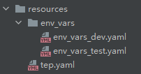
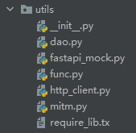
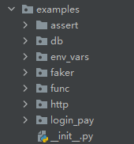
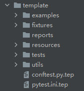

tep时隔8个月迎来重大全新升级¶

tep此次更新，旨在从“工具”升级为“框架”，为此做了大量的代码整洁工作，重新设计了部分功能，项目脚手架也焕然一新。
功能展示¶
环境变量模板¶
使用yaml维护环境变量：

你可以env_vars目录下维护env_vars_开头的任意命名的yaml模板，内容自定义：
domain: "http://127.0.0.1:5000"
env: "dev"
db:
mysql:
host: "localhost"
port: "3306"
user: "root"
password: "123456"
db: "sys"
取值时只需要引入env_vars fixture，像字典一样取值：
from loguru import logger
def test(env_vars):
logger.info(env_vars["domain"])
logger.info(env_vars["env"])
logger.info(env_vars["db"]["mysql"]["host"])
激活哪个模板，就在tep.yaml中配置：
env:
active: "dev"
工具包与示例代码¶
工具包有MySql访问、FastAPI Mock、常用函数、HTTP请求、流量录制：

示例代码有断言、数据库访问、环境变量、faker造数据、常用函数、HTTP请求、从登陆到下单自动化用例：

tep技术内幕¶
项目路径识别¶
在conftest加载插件时，使用inspect.stack()[1]反推项目路径：
def tep_plugins():
caller = inspect.stack()[1]
Config.project_root_dir = os.path.dirname(caller.filename)
plugins = fixture_paths() # +[其他插件]
return plugins
fixture自动导入¶
conftest.py加载时，将fixture路径作为插件加载，一个是项目目录下的fixtures包，一个是tep里面的fixture模块：
def fixture_paths():
"""
fixture路径，1、项目下的fixtures；2、tep下的fixture；
:return:
"""
_fixtures_dir = os.path.join(Config.project_root_dir, "fixtures")
paths = []
# 项目下的fixtures
for root, _, files in os.walk(_fixtures_dir):
for file in files:
if file.startswith("fixture_") and file.endswith(".py"):
full_path = os.path.join(root, file)
import_path = full_path.replace(_fixtures_dir, "").replace("\\", ".")
import_path = import_path.replace("/", ".").replace(".py", "")
paths.append("fixtures" + import_path)
# tep下的fixture
paths.append("tep.fixture")
return paths
环境变量¶
内置env_vars fixture：
#!/usr/bin/python
## encoding=utf-8
"""
@Author : dongfanger
@Date : 2020/12/30 9:30
@Desc : 预置fixture
"""
import os
import pytest
import yaml
from loguru import logger
from tep.config import tep_config, Config
class TepVars:
"""全局变量池"""
def __init__(self):
self.vars_ = {}
def put(self, key, value):
self.vars_[key] = value
def get(self, key):
value = ""
try:
value = self.vars_[key]
except KeyError:
logger.error(f"env_vars doesnt have this key: {key}")
return value
@pytest.fixture(scope="session")
def env_vars():
"""环境变量，读取resources/env_vars下的变量模板"""
class Clazz(TepVars):
def dict_(self):
env_active = tep_config()['env']["active"]
env_filename = f"env_vars_{env_active}.yaml"
with open(
os.path.join(Config.project_root_dir, "resources", "env_vars", env_filename)) as f:
return yaml.load(f.read(), Loader=yaml.FullLoader)
return Clazz().dict_()
TepVars是全局变量池，支持动态put和get。
env_vars根据tep.yaml配置的active，获取对应的环境变量模板，解析yaml，返回字典。
项目脚手架¶
脚手架代码完整的放在template下面：

文件后缀均加上了.tep，这样就不会扰乱实际项目代码，在tep startproject时会将这些文件拷贝到目标项目，同时去除.tep后缀，快速生成自动化项目。
这些模板的源码可以查阅另外一个项目：
https://github.com/dongfanger/tep-template.git
最新的tep预览功能也能在这个项目看到。
Try Easy Pytest¶
tep是Try Easy Pytest的首字母缩写，是依托于pytest的一款测试工具。本次工具架构改造是一个开端，tep还会持续迭代开发，逐步引入企业级的一系列技术实践，敬请期待，也欢迎加入我们，一起开发，共创美好未来！